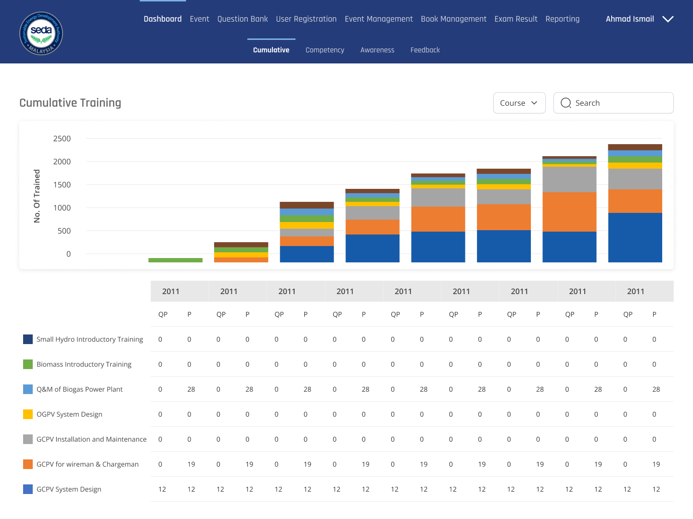
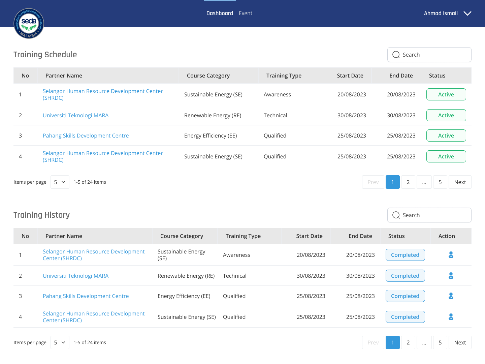
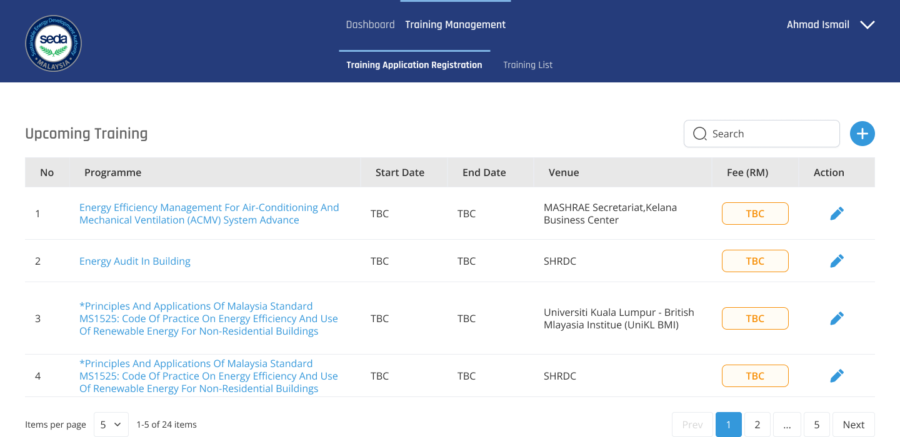
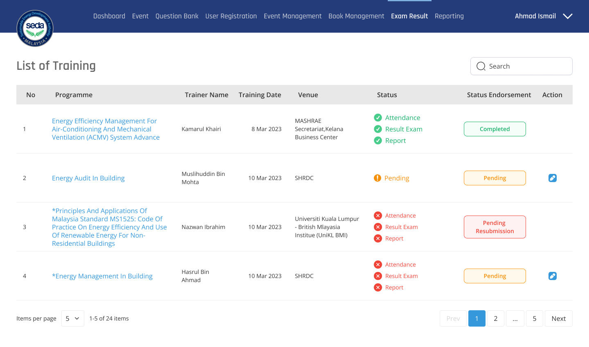

A multi-role web platform for Malaysia's Sustainable Energy Development Authority, covering everything from public training registration to admin-side reporting, across five distinct user roles.
SEDA Malaysia runs certified training for the country's renewable energy and energy-efficiency industry. The system needed to serve five different audiences at once: public applicants browsing courses, SEDA admins running the whole programme, trainers marking attendance, training partners submitting content, and participants tracking their own progress.


Working at Seetru Studio alongside a Lead Designer and Project Manager, I translated a detailed requirement specification into prototypes for every screen, keeping registration, training management, and exam tracking consistent with each other even as the audience changed from screen to screen.


Every screen across all five roles was delivered as a working prototype, from public registration through to admin reporting, giving the development team a complete, spec-accurate reference to build from.